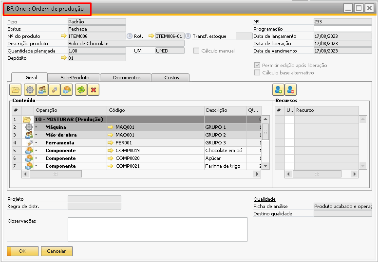
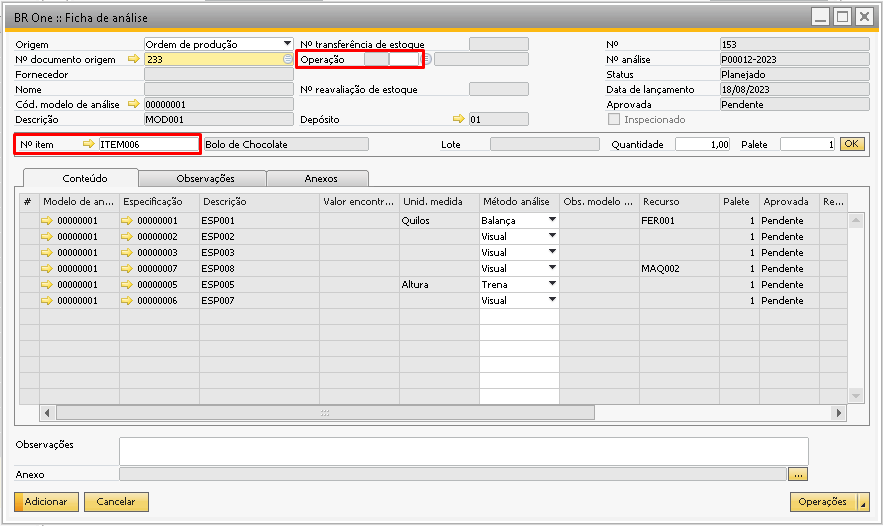
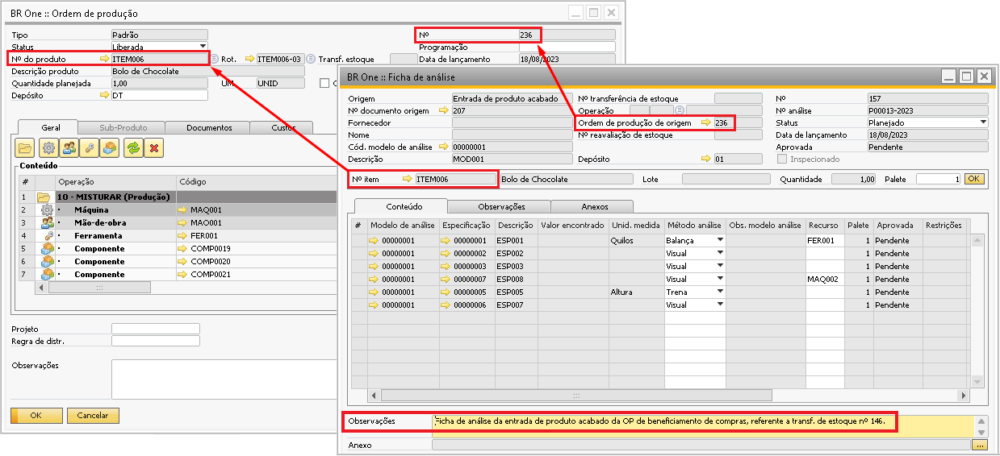
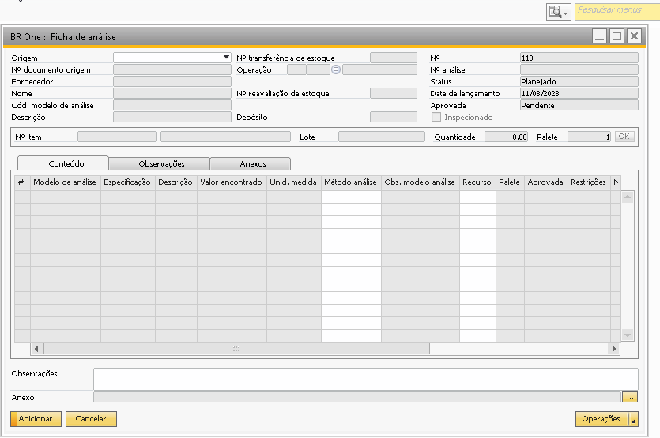
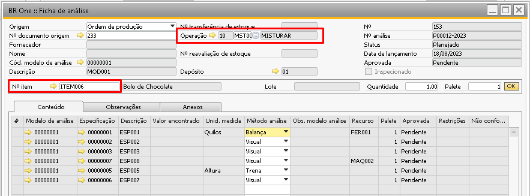

Origem - Ordem de produção
Ao selecionar a origem ‘Ordem de produção’, será possível criar ficha de análise tanto para o ‘Item’ quanto para alguma ‘Operação’ da ordem de produção selecionada.
Para o Item
Para criar ficha de análise para o ‘Item’ é necessário selecionar ‘Ordem de produção’ no campo ‘Origem’.
No campo ‘Nº documento de origem’, será possível selecionar o nº da OP que possua o item do cabeçalho com algum modelo de análise vinculado, ao preenche-lo, o item do cabeçalho da OP será selecionado automaticamente no campo ‘Nº do item’.
O campo ‘Depósito’ será carregado automaticamente após carregar o ‘Nº do item’, ele é recuperado do cabeçalho da origem (Ordem de produção). A quantidade também será preenchida automaticamente ao selecionar o ‘Nº do item’ conforme a quantidade planejada da OP mas pode ser alterada manualmente.
Para origens do tipo Ordem de produção, o campo ‘Lote’ não estará habilitado para preenchimento mesmo que o item seja administrado por lote (Isso para as fichas criadas manualmente).
{kind=link}
Quando é selecionado a ‘Ordem de produção’, o sistema preenche as informações de modelo de análise vinculado ao item na aba conteúdo da ficha de análise e mantém o campo ‘Operação’ em branco, sendo assim o que será analisado na ficha será o item e não operação.
{kind=link}
Quando o campo ‘Origem’ está marcado como ‘Ordem de Produção’, as ordens de produção de beneficiamento de compras não são listadas, isso porque quando se trata de uma OP de beneficiamento de compra a ficha de análise é gerada no momento da entrada de produto acabado, então para criar uma ficha de análise para este item é necessário mudar o campo ‘Origem’ e buscar nas entradas de PA, e ao selecionar a entrada, o campo ‘Ordem de produção de origem’ virá com o vínculo da ordem de produção.
{kind=link}
Atualmente as fichas de análise com base em ‘Ordem de produção’ do tipo ‘Retrabalho’ não podem ser criadas manualmente nem pela tela de ficha de análise nem pelo assistente de criação de ficha de análise, porém, para as bases onde a configuração ‘Criar ficha de análise automaticamente’ está selecionada as fichas estão sendo criadas automaticamente no momento de adicionar a transferência de estoque vinculada a entrada de PA.
Ordens de produção do tipo ‘Desmontagem’ também não podem ser criadas manualmente ou pelo assistente de criação de ficha de análise.
Para a Operação
Para criar uma ficha de análise para uma ‘Operação’ de uma ordem de produção é necessário primeiro selecionar o campo ‘Origem’ como ‘Ordem de produção’, logo em seguida selecionar no campo ‘Nº documento origem’ para informar qual OP terá a operação analisada.
Note que selecionando a OP o sistema automaticamente preenche o campo ‘Nº item’ e na aba ‘Conteúdo’ já apresentará as especificações dos modelos vinculados ao item.
Porém como a análise não será do item e sim da operação é necessário escolher no campo ‘Operação’ qual a operação que passará por análise.
{kind=link}
Quando é selecionado a ‘Ordem de produção’, o sistema preenche as informações de modelo de análise vinculado ao item na aba conteúdo da ficha de análise e mantém o campo ‘Operação’ em branco mas aberto para preenchimento, então caso seja a operação que passará por análise será necessário preencher o campo ‘Operação’, para que o sistema preencha a aba ‘Conteúdo’ com o modelo de análise vinculado a operação.
{kind=link}